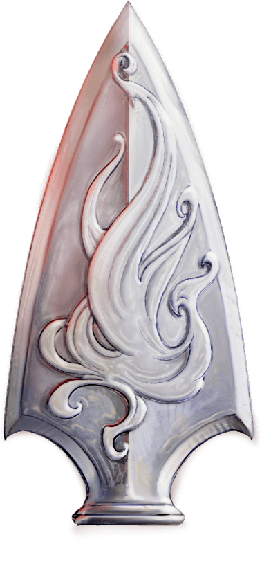

Listas e afins de HTML
Obras recomendadas
- Berserk (mangá)
- 1984 (livro)
- Maus (graphic novel)
- Sandman (hq)
- Cowboy Bebop (anime)
- Pluto (mangá)
- Persépolis (graphic novel)
- The Ghost in the Shell (mangá)
- Axiom Verge (jogo)
- Cavestory (jogo)
- Transistor (jogo)
- Child Of Light (jogo)
- Dead Space (jogo)
Alguns personagens de RPG meus
Número do Rei do Ducado de Banãnia
Voltar ao início